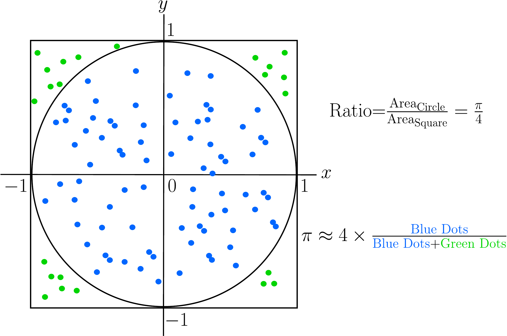

We call Monte-Carlo (MC) simulation methods to a broad class of computational methods used to approximate solutions to complex problems which can’t often be obtained by traditional analytical methods. The main idea of MC methods is to repeatedly sample randomly from pre-specified probability distributions to obtain numerical results that can be used to approximate the problem or phenomenon of interest.
Usually, each MC method comprises the following steps:
Define a model: The first step is to define a mathematical model of the phenomenon of interest, for instance stock prices, project duration, interest rates, etc.
Assign probability distributions: For any of the inputs defined in the mathematical model, we assign a probability distribution to each of them. These distributions can take any particular form which may be suited to the problem at hand (normal, exponential, Poisson, etc) and represent the range of possible values and their likelihood.
Simulate and aggregate: We run simulations of the model for large sample sizes and record the results for each run.
The final result is a distribution of possible outcomes and the probability of each outcome occurring, which provides a clear picture of the risk and potential variability inherent in the system.
The Monte Carlo method was developed in the 1940s by scientists working on the Manhattan Project, including Stanislaw Ulam and John von Neumann. The method was named after the Monte Carlo Casino in Monaco, reflecting the element of chance central to the technique. Initially used to solve problems in nuclear physics, the method has since been widely adopted across various fields, including finance, engineering, and computer science, due to its versatility and effectiveness in solving complex probabilistic problems.
3.1.1 The intuition behind Monte-Carlo simulation
Imagine that you want to know the probability of a particular outcome in a complex system with many uncertain variables that possibly interact in complicated ways. For instance, what is the probability that a new product launch will be successful, given uncertain factors like manufacturing costs, consumer demand and competitor pricing?
Instead of defining a mathematical equation to calculate that specific probability, we just simulate the event a large number of times (which can be thousands or even millions). Think of it like running an experiment for a number of times, the only difference being that in MC simulation the experiments are not physical but virtual. Therefore, the element of chance and repeated trials is central to MC simulation, and hence its connection to casinos and related games like the roulette wheel.
By running experiments a repeated number of times, we build representative samples that we can use to aggregate and calculate probabilities and confidence intervals. For instance, in our example if it turns out that 20% of the simulations result in success, we can confidently say that the probability of achieving that goal is 20%.
Example: Estimating the value of \(\pi\)
Let’s look at an example where we use MC simulation to approximate the value of the constant \(\pi\), which is depicted in Figure 3.1. Imagine you are throwing darts into this figure. When a dart hits the inside of the circle, we color it blue. Otherwise, we color it green. From basic arithmetic, we know that the ratio between the area of the circle (which is \(\pi r^2=\pi\) because \(r=1\)) and the area of the square (a \(2\times 2\) square with area 4) is \(\pi/4\). This means that if we had an approximation for these two areas, we could also approximate the value of \(\pi\) by dividing the circle’s area by the square’s area and multiplying by 4.
As you start throwing darts and counting which darts hit the inside and which ones the outside, you can estimate the ratio between the areas by just counting the number of blue dots and dividing by the total number of dots. However, for this to work, we need to assume that you are very bad at darts: concretely, that your darts will be uniformly distributed inside of the square. Under this conditions, if you continue throwing more and more darts and count accordingly, your approximation for \(\pi\) will get better and better. That’s MC simulation in a nutshell!

Figure 3.1: Example of Monte-Carlo simulation to calculate \(\pi\).
In this code, we make use of the modeling fact that points \((x,y)\) inside of the circle satisfy \(x^2+y^2\le 1\).
3.1.2 Limitations
Albeit powerful, MC simulation has a number of limitations that need to be taken into account.
Variance: Since MC is an inherently probabilistic method, the estimates have a degree of statistical uncertainty. Therefore different simulation runs will typically produce different estimates.
Slow convergence: In order to reduce this variance, the number \(N\) of iterations (samples) has to be dramatically increased. In general, the standard error decreases like \(1/\sqrt{N}\). So to halve the error, it’s not enough to double the number of samples, but it needs to be four times larger.
Random number generators: Here the quality of the PRNG used (see Chapter 2) plays a critical role. The used generator has to produce samples which are as random and independent as possible or otherwise MC won’t work.
In the next sections, we will uncover the foundations of MC simulation. First we will explore the core concepts and mathematical foundations behind it. After that, we will study classical MC techniques and how to calculate confidence intervals for their outputs. We will conclude this chapter with Markov Chain Monte Carlo (MCMC), one essential technique widely used in machine learning.
3.2 Core Concepts
The core idea of MC simulation is to leverage the Law of Large Numbers to approximate complex quantities: the average of a random variable over a large number of samples will converge to its expected value. This allows us to approximate quantities that are difficult or impossible to compute analytically by simulating random samples and calculating their average.
Mathematically, the goal of MC simulation is to estimate the expected value of a function of a random variable \(E[g(X)]\). The true expected value is defined by the integral:
Instead of solving this (often intractable) integral analytically, the MC method provides an approximation:
Sampling: We start by generating \(N\) independent and identically distributed (iid) random samples \(X_1, X_2, \dots, X_N\) from the probability distribution of \(X\) (using any of the methods seen in Chapter 2).
Evaluation: We now evaluate the target function \(g\) on each of the samples: \(g(X_1),g(X_2),\dots,g(X_N)\).
Estimation: The MC estimate \(\hat{E}[g(X)]\) is calculated as the sample average:
We call \(\hat{E}[g(X)]\) the Monte Carlo estimator. Note that we can approximate any integral with MC simulation using a simple trick. Assume we want to calculate the following integral:
\[
I=\int_a^b h(x) dx
\]
We can reframe this integral as the expectation of a uniform random variable in the interval \([a,b]\). Such a random variable has a pdf \(f(x)=1/(b-a)\). Now we have:
Recall that an estimator \(\hat{\theta}\) of a parameter \(\theta\) is said to be unbiased iff its expected value is equals to its true value \(E[\hat{\theta}]=\theta\). The MC estimator is an unbiased estimator of the expected value of a function of a random variable:
By the law of large numbers, we know that \(\hat{E}[g(X)]\) converges in probability to \(E[g(X)]\). Additionally, by the Central Limit Theorem (CLT), the standard error is proportional to \(1/\sqrt{N}\).
where \(\sigma\) is the standard deviation of \(g(X)\), which explains the slow convergence in general of MC simulation.
3.2.2 The Law of Large Numbers
The correctness guarantee for MC simulation comes from the law of large numbers, as mentioned before. We now give a more formal justification of why MC simulation does indeed arrive at the correct answer.
Let \(X_1,X_2,\dots,X_n\) be a sequence of iid random variables, and let \(\mu=E[X]\) denote the true mean of the distribution of the \(X_i\). We calculate the sample average of the sequence as:
\[
\bar{X}_n=\frac{X_1+X_2+\dots+X_n}{n}
\]
The law of large numbers states in its strong version that
That is, in the limit \(n\rightarrow\infty\), the probability of the limit converging to the true mean \(\mu\) is equals to 1. In our case, the true expectation \(\mu\) corresponds to the quantity of interest that we wish to calculate, and the random variables \(X_i\) correspond to one iteration of the simulation. The sample average \(\hat{X}_n\) represents then our current estimate of the true value \(\mu\).
We can model the simulation using the following probabilistic model. We can imagine each realization \(X_i\) to be the true value \(\mu\) perturbed by a random noise term \(\epsilon_i\) with \(E[\epsilon_i]=0\): \(X_i=\mu+\epsilon_i\). Now we average over \(n\) realizations:
But because the noise terms cancel out over time, we have \(\frac{1}{n}\sum \epsilon_i\rightarrow 0\) as \(n\rightarrow\infty\), and we end up in the limit with \(\bar{X}_n \approx \mu\).
Note that the independece assumption of the \(X_i\) is critical, since otherwise the error terms would compound rather than cancel out. This is the reason why only high-quality PRNG are used with MC simulation.
3.2.3 Confidence intervals
In order to quantify the uncertainty given by a MC estimate, confidence intevals represent an appropriate tool. For the calculation, we rely on the Central Limit Theorem already mentioned above. By this theorem, we know that the distribution of the sample mean tends towards a normal distribution when the number of iterations becomes large. Formally:
\[
\sqrt{n}(\bar{X}_n-\mu)\sim N(0,\sigma^2)
\]
Where \(\operatorname{Var}(X_i)=\sigma^2\). The consequence is that we can use \(Z\)-values of the standard normal distribution to calculate the confidence intervals:
where \(z_{\alpha/2}\) represents the \(\alpha/2\)-level quantile of the standard normal distribution. As an example, consider the following implementation for the estimate of \(\pi\) using Python code:
import numpy as npimport scipy.stats as statsdef monte_carlo_with_ci(num_iterations): x = np.random.uniform(0, 1, num_iterations) y = np.random.uniform(0, 1, num_iterations) inside_circle = (x**2+ y**2) <=1 values = inside_circle *4.0 mean_estimate = np.mean(values) std_dev = np.std(values, ddof=1) # ddof=1 for sample standard deviation standard_error = std_dev / np.sqrt(num_iterations)# 4. Calculate 95% Confidence Interval# z-score for 95% is 1.96, or strictly: stats.norm.ppf(0.025) z_score = stats.norm.ppf(0.025) margin_of_error = z_score * standard_error lower_bound = mean_estimate + margin_of_error upper_bound = mean_estimate - margin_of_errorreturn mean_estimate, lower_bound, upper_bound# Runmu, lower, upper = monte_carlo_with_ci(10000)print(f"Estimate: {mu:.4f}")print(f"95% CI: [{lower:.4f}, {upper:.4f}]")
Estimate: 3.1068
95% CI: [3.0741, 3.1395]
3.3 Variance Reduction Techniques
Until now, we have considered situations where sampling the probability space is effective. For instance, in the \(\pi\) calculation example, we are sampling points \((x,y)\) from a well-defined 2-dimensional space. By sampling a large number of points we expect our estimate to converge to the true value as the number of samples tends to infinity. However, what happens when we need to sample from a much higher dimensional space? For instance, sampling 100 numbers in a one-dimensional space might be enough for a good estimation. In a \(2D\) space, we would need to sample \(100\times 100=10^4\) points to reach a similar coverage, which would be still doable. However, what if our sampling space has 10 dimensions? That would amount to sampling \((100)^{10}\) points! This is called the curse of dimensionality and is one of the central problems in practical, high-dimensional problems.
One of the main advantages of MC simulation is that the error depends primarily on the number of samples and the variance of the simulation, and not on the dimension of the problem (see Equation 3.4). The problem is that the square root in the denominator forces us to increase the number of samples quadratically to achieve a specific error level. For example, if a simulation takes 1h to run, making it 10 times more accurate would take not 10, but 100 hours (more than 4 days).
However, there is another knob in Equation 3.4 that we can use: the standard deviation\(\sigma\). If we manage to reduce this standard deviation (or equivalently, the variance) of the simulation, we can increase the accuracy of the simulation as well. We will now see some methods for reducing the variance effectively in MC simulation: antithetic variates, control variates, importance sampling and stratified sampling.
3.3.1 Antithetic variates
Imagine the draw a large value for a random variable \(X_i\) during our simulation (large compared to the true mean \(\mu\)). Automatically, this value will increase the sample variance significantly. One simple way of compensating for this large value is to generate a “mirror” value that makes the large value cancel out. This is the main idea of the antithetic variates method. For instance, if we sample a random variable \(U\) in \([0,1]\), we do include also the value \(1-U\) in our sample. Therefore, instead of sampling \(n\) times independently, we sample \(n/2\) pairs \((U, 1-U)\). This typically already reduces the variance by a significant margin, improving the effectiveness of the MC simulation.
3.3.2 Control variates
Another highly effective method for reducing the variance is to use control variates. The main intuition behind this method is the following: imagine that you want to weigh an object \(Y\), however the scale has unknown accuracy. Let’s say we put it on the scale and it shows 10.5 kg. Now we have another object \(X\) for which we know, for sure, that it weighs exactly 10 kg. After putting it on the scale, we get a measurement of 10.2 kg. This means that the scale is off by 0.2 kg, so we can now correct our previous measurement and correctly conclude that \(Y\) weighs 10.3 kg.
In our case, we want to estimate \(E[Y]\) using MC simulation, for which there is no analytical solution. However, there is a control \(X\) for which we can calculate \(E[X]\) exactly and is highly correlated with \(Y\). Then, we can define a corrected estimator as:
\[
Y_{cv}=Y-c(X-E[X])
\tag{3.6}\]
with a specific value for the constant \(c\). Note that this estimator is unbiased:
\[
E[Y_{cv}]=E[Y]-c(E[X]-E[X])=E[Y]
\]
We are interested in minimizing the variance of this estimator, which is
where \(\rho_{xy}\) is the correlation coefficient between \(X\) and \(Y\). Since we want this ratio to get as close to 0 as possible, we have to choose \(X\) and \(Y\) so that \(\rho_{xy}\) is as close to 1 as possible.
Let’s solve an example to illustrate this technique. Assume that we want to estimate the value of the following integral:
\[
I=\int_0^1 e^{x^2} dx
\]
which is analytically untractable. However, there is an obvious proxy \((1+x^2)\), which represents the first two terms of the Taylor expansion of \(e^{x^2}\) around 0. We can calculate the integral for the control function easily:
As can be seen, the variance reduction achieved by the control variates method is in this case around 60x, which means that running 10,000 iterations using the control variates method is as good as running classical MC with 600,000 iterations.